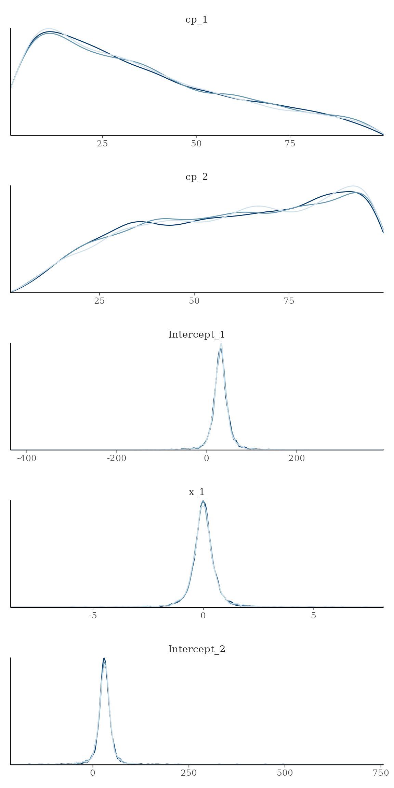
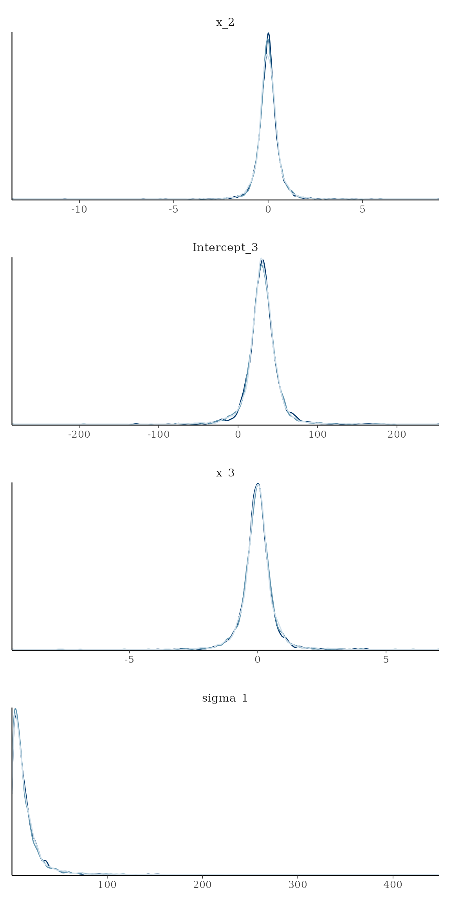
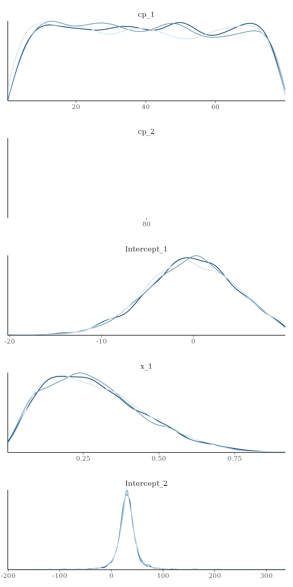
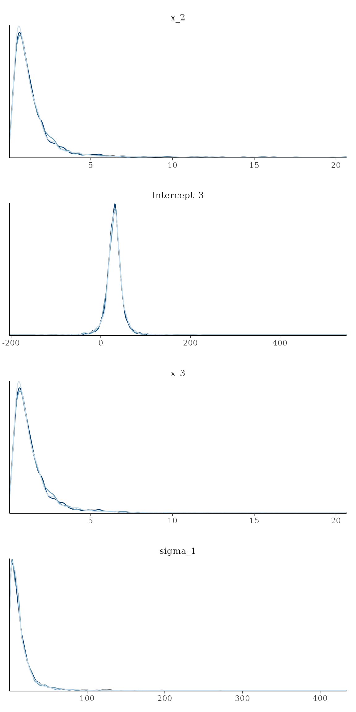
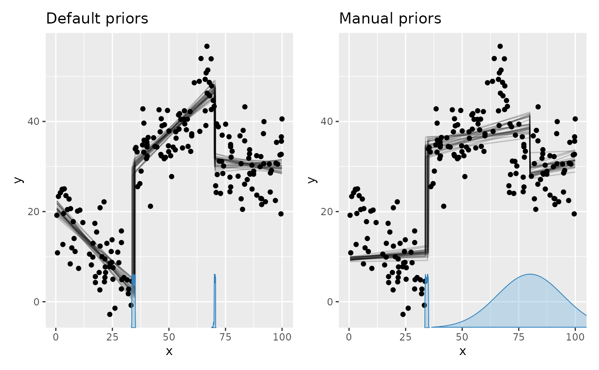
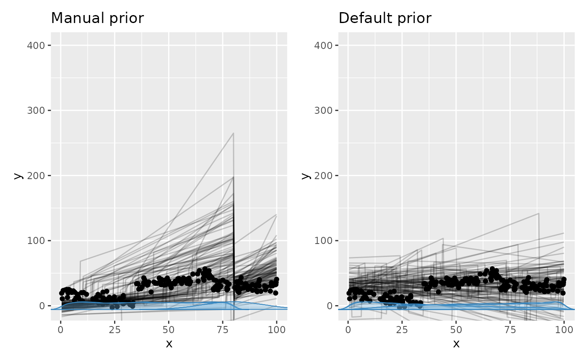

Setting a prior
mcp takes priors in the form of a named list. The names
are the parameter names, and the values are JAGS code. Here is a fairly
complicated example, just to get enough priors to demonstrate the
various ways priors can be used:
model = list(
y ~ 1 + x, # Intercept_1 + x_1
~ 1 + x, # cp_1, Intercept_2, and x_2
~ 1 + x # cp_2
)
prior = list(
Intercept_1 = "dnorm(0, 5) T(, 10)", # Intercept; less than 10
x_1 = "dbeta(2, 5)", # slope: beta with right skew
cp_1 = "dunif(min(x), cp_2)", # change point between smallest x and cp_2
x_2 = "dt(0, 1, 3) T(x_1, )", # slope 2 > slope 1 and t-distributed
cp_2 = 80, # A constant (set; not estimated)
x_3 = "x_2" # continue same slope
# Intercept_2 and Intercept_3 not specified. Use default.
)The values are JAGS code, so all JAGS distributions are allowed.
These also include gamma, dt,
cauchy, and many others. See the JAGS
user manual for more details. The parameterization of the
distributions are identical to standard R. Use SD when you specify
priors for dnorm, dt, dlogis,
etc. mcp converts to precision for JAGS under the hood via
the sd_to_prec() function (prec = 1 / sd^2),
so you don’t have to worry about it. You can see the effects of this
conversion by inspecting the difference between fit$prior
(using SD) and fit$jags_code (using precision).
Other notes:
Order restriction is automatically applied to change points (
cp_*parameters) using truncation (e.g.,T(cp_1, )) so that they are in the correct order on the x-axis. You can override this behavior by definingT()ordunifyourself (dunifis inherently truncated), in which casemcpwon’t do further. Dirichlet priors are inherently ordered (jump to section) and cannot be further truncated.Data-dependent values can be written directly in priors: for example,
min(x),max(x),median(y),mad(y),max(x) - min(x),segment_width(x),n_segments(), andn_cp().mcpresolves these expressions before generating JAGS code. The older uppercase constants (MINX,MAXX, and so on) remain temporarily supported with a deprecation warning.You can fix any parameter to a specific value. Simply set it to a numerical value (as
cp_2above). A constant is a 100% prior belief in that value, and it will therefore not be estimated.You can also equate one variable with another (
x_3 = "x_2"above). You would usually do this to share parameters across segments, but you can be creative and do something likex_3 = "x_2 + 5 - cp_1/10"if you want. In any case, it will lead to one less parameter being estimated, i.e., one less free parameter.
Let us see the priors after running them through mcp and
compare to the default priors:
library(mcp)
future::plan(future::multisession, workers = 3)
df_dummy = data.frame(x = 1:100, y = 1:100)
empty_manual = mcp(model, data = df_dummy, prior = prior, sample = FALSE)
empty_default = mcp(model, data = df_dummy, sample = FALSE)
# Inspect resolved priors and bounds. Add rules, descriptions, sources, and
# kinds with prior_summary(empty_manual, verbose = TRUE).
prior_summary(empty_manual)## # A tibble: 9 × 5
## parameter segment dpar prior bounds
## <chr> <int> <chr> <chr> <chr>
## 1 cp_1 2 cp uniform(min = 1, max = cp_2) [min(…
## 2 cp_2 3 cp 80 none
## 3 Intercept_1 1 mu normal(mean = 0, sd = 5) [-Inf…
## 4 x_1 1 mu beta(shape1 = 2, shape2 = 5) [0, 1]
## 5 Intercept_2 2 mu student_t(df = 3, location = 50.5, scale = 3… none
## 6 x_2 2 mu student_t(df = 3, location = 0, scale = 1) [x_1,…
## 7 Intercept_3 3 mu student_t(df = 3, location = 50.5, scale = 3… none
## 8 x_3 3 mu x_2 none
## 9 sigma_1 1 sigma student_t(df = 3, location = 0, scale = 37.1) [0, I…
prior_summary(empty_default)## # A tibble: 9 × 5
## parameter segment dpar prior bounds
## <chr> <int> <chr> <chr> <chr>
## 1 cp_1 2 cp student_t(df = 1, location = 1, scale = 49.5) [min(…
## 2 cp_2 3 cp student_t(df = 1, location = 1, scale = 49.5) [cp_1…
## 3 Intercept_1 1 mu student_t(df = 3, location = 50.5, scale = 3… none
## 4 x_1 1 mu student_t(df = 3, location = 0, scale = 1.12… none
## 5 Intercept_2 2 mu student_t(df = 3, location = 50.5, scale = 3… none
## 6 x_2 2 mu student_t(df = 3, location = 0, scale = 1.12… none
## 7 Intercept_3 3 mu student_t(df = 3, location = 50.5, scale = 3… none
## 8 x_3 3 mu student_t(df = 3, location = 0, scale = 1.12… none
## 9 sigma_1 1 sigma student_t(df = 3, location = 0, scale = 37.1) [0, I…Now, let’s simulate some data that from the model. The
following priors are “at odds” with the actual data so as to show their
effect.
df = data.frame(x = runif(200, 0, 100), y = 1) # 200 datapoints between 0 and 100
df$y = empty_default$simulate(empty_default, df,
Intercept_1 = 20, Intercept_2 = 30, Intercept_3 = 30, # intercepts
x_1 = -0.5, x_2 = 0.5, x_3 = 0, # slopes
cp_1 = 35, cp_2 = 70, # change points
sigma = 5)
head(df)## x y
## 1 8.0750138 14.026425
## 2 83.4333037 26.072837
## 3 60.0760886 37.254360
## 4 15.7208442 8.161871
## 5 0.7399441 10.848651
## 6 46.6393497 32.366985Sample the prior and posterior. We let the manual fit adapt for longer, since it is harder to find the right posterior under these weird prior constraints (priors will usually improve sampling efficiency).
fit_manual = mcp(model, data = df, sample = "both", adapt = 10000, prior = prior)
fit_default = mcp(model, data = df, sample = "both", adapt = 10000)First, let’s look at the priors side by side. Notice the use of
prior = TRUE to show prior samples. This works in
plot(), plot_pars(), and
summary() among others.
library(ggplot2)
pp_default = plot_pars(fit_default, type = "dens_overlay", prior = TRUE) +
ggtitle("Default priors")



pp_default + pp_manual## integer(0)Here is the resulting posterior fits:
plot_default = plot(fit_default) + ggtitle("Default priors")
plot_manual = plot(fit_manual) + ggtitle("Manual priors")
plot_default + plot_manual
We see the effects of the priors.
- The intercept
Intercept_1was truncated to be below 10. - The slope
x_1is bound to be non-negative (becausedbeta). - The slopes
x_2andx_3were forced to be identical. - The change point
cp_2was a constant, so there is no uncertainty there.
Of course, it will usually be the other way around: setting priors manually will often serve to sample the “correct” posterior.
Default priors on change points
The following are treated more formally in the mcp paper.
Change points have to be ordered from left (cp_1) to
right (cp_2+). This order restriction is enforced through
the priors and this is not trivial. mcp currently offers
two “packages” of change point priors that achieves different goals:
Speed and estimation: The default prior is suitable for estimation, prediction, and it works well for
loo()cross-validation as well. It’s main virtue is that it samples the change point posteriors relatively effectively, but it will often be deeply unfit for Bayes Factors if there are 3+ change points (see below). It may also favor “late” change points too much if estimating many change points with little data (e.g. 5 change points with 100 data points or 10 with 300).Uninformative and nice mathematical properties: Use the
Dirichletprior if you want a more uninformative prior that is better suited for everything including Bayes Factors, scientific publication, or even estimation at 6+ change points. It has better known mathematical properties and a precedence in Büerkner & Charpentier (2019). It is not default because it often samples order(s) of magnitude less efficiently than the default priors while yielding identical fits. In these cases you need to increase the number of MCMC samples (e.g.mcp(..., iter = 20000)).
They two “packages” are identical for one change point, though the default still samples more effectively.
## Posterior was not sampled. Using prior samples. Set `prior = TRUE` to mute this message.
## Posterior was not sampled. Using prior samples. Set `prior = TRUE` to mute this message.The t-tail prior on 2+ change points (default)
The first change point defaults to the rule
cp_1 = uniform(min = min(x), max = max(x)). In other words,
the change point has to happen in the observed range of x, but it is
equally probable across this range. This is identical to the Dirichlet
prior.
For 2+ change points, the default rule (on all change
points) is
cp_i = student_t(df = n_cp() - 1, location = min(x), scale = (max(x) - min(x)) / n_cp()),
bounded below by the preceding change point and above by
max(x). This is not as complicated as it looks, so let me
unpack it.
- It is t-distributed with
degree of freedom (
n_cp() - 1). This ensures narrower priors as the number of change points increase, so as to avoid excessive accumulation of densities at high . - It is truncated to be greater than the previous
cp. For example,cp_3is bounded below bycp_2and above bymax(x). Sincecp_0 = min(x), all change points are “forced” to be in the observed range ofx. - The standard deviation is the distance between equally-spaced change
points:
(max(x) - min(x)) / n_cp(). - The mean is always the lowest observed
x. Thuscp_1is a half-t andcp_2+are right tails of the same t. Hence the name “t-tail prior”. Since they are estimated using MCMC, the fact that the absolute densities are smaller for later change points is of no importance since only the relative densities matter.
One side effect of the truncation is that later change points have greater prior probability density towards the right side of the x-axis. In practice, this “bias” is so weak that it takes a combination of many change points and few data for it to impact the posterior in any noticeable way.
Dirichlet-based prior on change points
The Dirichlet distribution is a multivariate beta prior and these betas jointly form a simplex, meaning that they are all positive and sum to one. They are all in the interval so they are shifted and scaled to . The Dirichlet prior has the nice property that (1) the order-restriction and boundedness is inherent to the distribution, and (2) it represents a uniform prior that any change happens at any , i.e., it is maximally uninformative. It underlies the modeling of monotonic effects in brms (Büerkner & Charpentier (2019)).
To use the Dirichlet prior, you need to specify it for all or none of the change points. E.g.,
prior_dirichlet = list(
cp_1 = "dirichlet(1)",
cp_2 = "dirichlet(1)",
cp_3 = "dirichlet(1)"
)The number in the parenthesis is the
parameter, so you could also specify cp_1 = "dirichlet(3)
if you want to push credence for that and later change points more to
the rightwards while pushing earlier priors leftwards.
Manual priors on change points
You can easily change or modify change point priors, just as we did
in the initial example. But beware that the nature of the priors change
when truncation is applied. Use
plot_pars(fit, prior = TRUE) to check the resulting
prior.
If you want more informed priors on the change point location, i.e.,
cp_2 = "dnorm(40, 10), mcp adds this order
restriction by adding bounds equivalent to
cp_2 = "dnorm(40, 10) T(cp_1, max(x))". You can avoid this
behavior by explicitly doing an “empty” truncation yourself, e.g.,
cp_2 = "dnorm(40, 10) T(,). However, the model may fail to
sample the correct posterior in samples where order restriction is not
kept.
Default priors on linear predictors
The defaults borrow the robust calibration used by brms,
adapted to the local parameterization of mcp. Intercepts
use Student-t priors centered on a robust, link-appropriate location.
Data-calibrated scales are at least 2.5, avoiding implausibly narrow
defaults when the response happens to have little variation. Unlike the
flat default coefficient priors in brms, mcp
uses proper Student-t priors because change-point models need
regularization for stable sampling and prior prediction.
Numeric coefficient priors use the corresponding family-level scale divided by a representative change in the model-matrix column: its observed range when it has two values, and two standard deviations otherwise. This is the scaling convention proposed by Gelman (2008). Transformations and interactions are treated as model-matrix columns in their own right. Treatment-coded categorical contrasts keep the family-level scale.
For terms involving local par_x, the representative
change also includes the expected segment width,
(max(x) - min(x)) / n_segments(), or the corresponding
power for polynomial terms. Thus the prior concerns the amount of change
across a typical segment rather than depending arbitrarily on the units
or number of change points.
Gaussian mean priors
With the identity link, the Gaussian intercept prior is centered on
round(median(y), 1) and uses scale
max(2.5, round(mad(y), 1)). Contrasts and numeric
coefficients use the same scale and the reference-change scaling
above.
With the log link, this calibration uses the log response, replacing
zero by 0.1 and using finite fallbacks. Both intercept rules follow
brms; mcp adds proper scaled coefficient
priors for prior sampling and mild segment regularization.
Gaussian residual-SD priors
For Gaussian models without an explicit sigma() formula,
the residual-SD prior is calibrated from mad(y) on the
response scale. This remains true for
gaussian(link = "log"): that link constrains the
conditional mean, not the observations, so non-positive responses are
valid and are never passed through log() merely to
construct a sigma prior.
An explicit sigma() formula instead models log-SD, as in
brms. Its intercept prior is dt(0, 2.5, 3),
and its proper contrast and numeric-coefficient priors use the same
reference-change scaling described above. These proper coefficient
priors intentionally differ from the improper flat defaults in
brms so that prior-only sampling remains defined.
See the family-specific articles for more information about the priors for other families:
-
vignette("binomial")- also relevant forbernoulli -
vignette("poisson")- also relevant for negative-binomialshape -
vignette("variance")for explicitsigma()models -
vignette("arma")for AR/MA regularization and root conditions
The general principles belong here: parameterization, data-based
scaling, proper regularization, and prior predictive checking. Exact
defaults and constraints that arise from a particular likelihood or
model component are documented in its own article.
prior_summary(fit, verbose = TRUE) is the authoritative
model-specific inventory, so the articles do not need to duplicate every
generated prior.
Default priors on group-level effects
Each group-level effect has a population-level SD parameter.
Predictor-side deviations use a zero-mean normal distribution governed
by that SD, as in ordinary multilevel regression. With a
multi-coefficient || term, every independent coefficient
has its own SD. The SD receives a positive, weakly informative prior
from the family and link specification. For distributional parameters,
the deviations and their SD are on that parameter’s link scale; for
example, effects inside an explicit sigma() formula are on
the log-SD scale.
Group-level change-point deviations have additional constraints: they are exactly zero-centered and their default priors keep the resulting change points between the relevant bounds. Predictor-side deviations are mean-zero in their hierarchical distribution but are not forced to sum exactly to zero. See group-level effects with mcp.
Prior predictive checks
Prior predictive checks is a great way to ensure that the priors are
meaningful. Simply set sample = "prior". Let us do it for
the two sets of priors defined previously in this article, to see their
different prior predictive space.
# Sample priors
fit_pp_manual = mcp(model, data = df, prior = prior, sample = "prior")
fit_pp_default = mcp(model, data = df, sample = "prior")
# Plot it
plot_pp_manual = plot(fit_pp_manual, lines = 100) + ylim(c(-400, 400)) + ggtitle("Manual prior")
plot_pp_default = plot(fit_pp_default, lines = 100) + ylim(c(-400, 400)) + ggtitle("Default prior")
plot_pp_manual + plot_pp_default # using patchwork
You can see how the manual priors are more dense to the left, and the “concerted” change at x = 80.
JAGS code
Here is the JAGS code for fit_manual:
fit_manual$jags_code## model {
## # mcp helper values
## cp_0 = CONST1_
## cp_3 = CONST2_
##
## # Priors for population-level effects
## cp_1 ~ dunif(CONST1_, cp_2) # User-specified prior
## cp_2 = CONST3_ # Fixed at 80
## Intercept_1 ~ dnorm(0, 1/(5)^2) T(,10) # User-specified prior
## x_1 ~ dbeta(2, 5) # User-specified prior
## Intercept_2 ~ dt(30.5, 1/(11.8)^2, 3) # Robustly centered mean intercept with a minimum scale of 2.5
## x_2 ~ dt(0, 1/(1)^2, 3) T(x_1,) # User-specified prior
## Intercept_3 ~ dt(30.5, 1/(11.8)^2, 3) # Robustly centered mean intercept with a minimum scale of 2.5
## x_3 = x_2 # Same value as x_2
## sigma_1 ~ dt(0, 1/(11.8)^2, 3) T(0,) # Positive residual SD calibrated on the response scale
##
## # Model and likelihood
## for (i_ in 1:length(x)) {
## # par_x local to each segment
## x_local_1_[i_] = min(x[i_], cp_1)
## x_local_2_[i_] = min(x[i_], cp_2) - cp_1
## x_local_3_[i_] = min(x[i_], cp_3) - cp_2
##
## # Formula for mu
## link_mu_[i_] =
##
## # Segment 1: y ~ 1 + x
## (x[i_] >= cp_0) * (x[i_] < cp_1) * inprod(rhs_matrix_[i_, c(1)], c(Intercept_1)) * 1 +
## (x[i_] >= cp_0) * (x[i_] < cp_1) * inprod(rhs_matrix_[i_, c(2)], c(x_1)) * x_local_1_[i_] +
##
## # Segment 2: y ~ 1 ~ 1 + x
## (x[i_] >= cp_1) * (x[i_] < cp_2) * inprod(rhs_matrix_[i_, c(3)], c(Intercept_2)) * 1 +
## (x[i_] >= cp_1) * (x[i_] < cp_2) * inprod(rhs_matrix_[i_, c(4)], c(x_2)) * x_local_2_[i_] +
##
## # Segment 3: y ~ 1 ~ 1 + x
## (x[i_] >= cp_2) * inprod(rhs_matrix_[i_, c(5)], c(Intercept_3)) * 1 +
## (x[i_] >= cp_2) * inprod(rhs_matrix_[i_, c(6)], c(x_3)) * x_local_3_[i_]
##
## # Formula for sigma
## link_sigma_[i_] =
##
## # Segment 1: y ~ 1 + x
## (x[i_] >= cp_0) * inprod(rhs_matrix_[i_, c(7)], c(sigma_1)) * 1
##
## # Likelihood and log-density for family = gaussian()
## mu_[i_] = link_mu_[i_]
## sigma_[i_] = max(1e-03, link_sigma_[i_])
## y[i_] ~ dnorm(mu_[i_], 1 / sigma_[i_]^2) # SD as precision
## }
## }